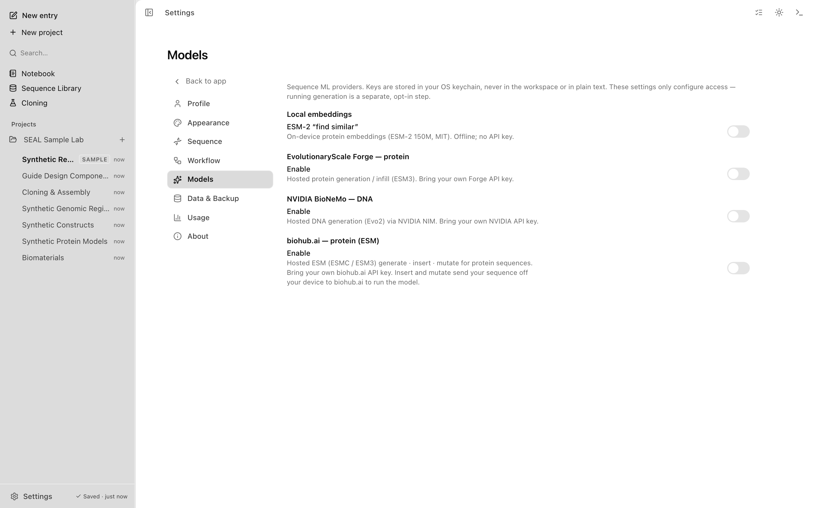

ESM design
This guide covers source and direct-edition tools. These tools are not bundled with the first Store release. Compare editions.
Generate, insert, and mutate sequences with the biohub.ai ESM engine, from the sequence tab. The same three operations also run against a deterministic on-device placeholder when no model is configured, so the workflow works offline.
Overview
ESM design is a single dialog in the sequence tab, opened from the toolbar action ESM Design. It captures the active block and any current selection, then lets you pick one of three operations:
- Generate a new sequence of a chosen length.
- Insert new residues into the active sequence at a chosen position.
- Mutate residues across the active sequence or a selected region.
Candidates come from a swappable sequence-generation engine registry. Two engines are wired:
- biohub.ai ESM, a hosted ESM protein language model (ESMC / ESM3) reached over the biohub.ai logits API. It runs the three operations as masked-language-model infill.
- The local preview engine, a deterministic on-device generator for trying the workflow. It uses no model weights, API key, or network connection.
The biohub.ai engine is preferred automatically for protein sequences when the provider is enabled in Settings → Models and a key is present. The local unsigned package disables in-app provider-key storage and uses the local preview engine. Builds with secure key storage can use the hosted engine for protein; DNA and RNA use the local engine. The ESM Design action appears in the toolbar only when a model is enabled.

The dialog labels each candidate with which engine produced it and shows whether the source was a real model or the local placeholder. Read that label before you commit a candidate.
Three operations, one engine registry
Generate
Generate builds a new sequence from scratch. Open ESM Design, select the Generate tab, set New sequence length in the sequence's unit (bp, nt, or aa), and pick a candidate.
Against the biohub.ai engine, generate sends an all-mask request of the requested length and samples each position from the model's returned logits. Against the local engine it samples from a background residue composition. Generate does not send your existing sequence to the model: only the requested length is sent.
Applying a generate result creates a new, independent block. It is not recorded as derived from the block that was active when you opened the dialog.
Insert
Insert adds new residues into the active sequence. Select the Insert tab, choose where the residues go, and set the Insert length.
You can anchor the insert before or after the current selection, or type an explicit position. With the biohub.ai engine, mask tokens are spliced into the real context at the anchor and only the masked positions are sampled, so the surrounding residues condition the fill.
Applying an insert result creates a new block derived from the source block, with a parent link recorded.
Mutate
Mutate resamples residues in place. Select the Mutate tab. If you have a region selected, mutation is scoped to that selection; with no selection (or a collapsed caret), it runs across the whole sequence.
With the biohub.ai engine, mutate sends the unmasked context and resamples the chosen positions while excluding each position's current residue, so every chosen position changes. The number of positions changed scales with temperature. Each candidate's note lists the substitutions, for example A12G, L45V.
Applying a mutate result creates a new block derived from the source block, with a parent link recorded.
Sampling controls
The dialog's power settings drive sampling for whichever engine is active:
| Control | Effect |
|---|---|
| Temperature | Sharpens (below 1) or flattens (above 1) the residue distribution before sampling. |
| Top-p | Nucleus sampling: keep the smallest residue set whose cumulative probability reaches top-p. |
| Top-k | Keep only the k highest-weight residues. 0 turns it off. |
| Candidates | How many candidate sequences to return. |
| Seed | Deterministic seed. The same seed and inputs return identical candidates. A button randomizes it. |
For the biohub.ai engine, the sampling knobs are applied to the returned logits on your device. Moving a slider re-samples without another network request; only a change to the structural input (operation, length, context, insert position, or model) fetches new logits.
PROSITE motif constraints
You can constrain a design with a PROSITE pattern, either typed into the motif field or chosen from the preset list. The pattern is validated for the sequence's alphabet before it is applied. An invalid pattern is reported and ignored.
A valid motif changes each operation:
- Generate and insert force the generated region to contain the motif. Each conserved position samples only from its allowed residues, and variable spacers fill freely. For an unanchored motif, Motif start places it within the region.
- Mutate preserves existing motif occurrences. Positions inside a match are excluded from mutation so an edit cannot break them.
Every candidate is then re-scanned with the exact PROSITE matcher, tagged as containing the motif or not, and re-ranked so satisfying candidates come first. In the candidate list, a motif or no motif badge marks each one, and matches are highlighted in the result preview. A Show only matches checkbox hides non-matching candidates.
When a motif cannot fit
A pattern can be valid yet impossible to place for the chosen length. The dialog warns instead of silently returning unmatched candidates. The cases it flags:
- The motif's minimum length is larger than the generate length or insert length. The warning tells you the minimum needed.
- An anchored motif (
<or>) targets a sequence end. On an insert it can only hold when the insert sits at the matching end, so the dialog suggests using Generate, dropping the anchor, or inserting at the start or end. - A both-anchored
<...>motif must be the whole sequence, so the length has to fall inside the motif's own span.
Mutate has no length to outgrow, so these fit warnings do not apply to it.
Score with ESM-C
Generate, insert, and mutate are design operations, and each can fall back to the on-device placeholder when no model is configured. The next two actions evaluate an existing protein instead, and they run on the hosted model only. Both open from the same sequence toolbar actions menu that hosts ESM Design.
Choose Score with ESM-C to rate how expected a protein looks to the model. The action appears only for a protein block when biohub.ai is enabled in Settings → Models and a key is present. There is no local fallback, so running it sends your sequence off your device to the hosted model.
The dialog reports a pseudo-perplexity and a mean logP for the scored window, with a short verdict that runs from highly expected, through plausible, unusual, and surprising, to implausible as the pseudo-perplexity rises.
Below the metrics, a per-residue heat strip shows the model's confidence at each position. Each cell encodes that confidence in both bar height and color, so the track stays readable in high-contrast mode where chroma is stripped. A short most surprising list calls out the lowest-probability residues in the window.
Pick how the score is computed. Precise masks each residue in turn and reads the probability of the true residue given the rest, at a cost of one request per residue. Fast reads every position in a single pass, and the dialog defaults to it for longer windows. Scoring a selection scopes the result to that window.
Score and Mutational scan are read-only. They report on the active sequence and create no block and record no provenance, so nothing new appears in the provenance graph or the Activity trail.
Mutational scan
Choose Mutational scan to rate every single-residue substitution across a window. The gating matches Score: protein block only, biohub.ai enabled in Settings → Models with a key present, and no local fallback, so your sequence is sent off your device to the hosted model.
The result is a heatmap of all 20 amino acids at each position. Each cell is ΔlogP, the change in pseudo-log-likelihood for that substitution versus the wild-type residue. Tolerated substitutions read cool and disfavored ones read warm, the wild-type cell is outlined in each column, and hovering a cell shows the exact value. In high-contrast mode the color ramp becomes a grayscale lightness scale so the signal survives without chroma. The same Precise and Fast choice from scoring applies here.
ΔlogP is a language-model preference signal, not a ΔΔG or folding free energy. Read it as relative tolerance for each substitution, not a thermodynamic prediction.
Provenance
Applying a candidate records where the sequence came from. The new block carries sequence-generation metadata including the operation, the engine id and label, whether the source was a real model, the candidate note, the score, the sampling parameters, and the output length and type.
Insert and mutate results link to the source block as derivatives, so the provenance graph includes the parent edge and Activity records the change. Generate results are independent new blocks with no parent edge because they are not derived from an existing sequence.
What reaches the network depends on the engine and operation. The local preview engine sends nothing off your device. In a build with secure key storage, the biohub.ai engine is a hosted service: a generate request sends mask tokens for the requested length. Insert and mutate send the protein context as token IDs, which can include the full active sequence when editing a selected region. The app reads the API key from OS-backed secure storage and sends the request from the Electron main process. Using a hosted model may consume provider credits. See Privacy.